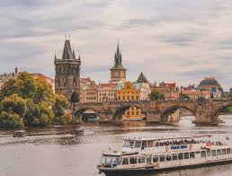
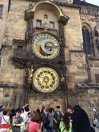
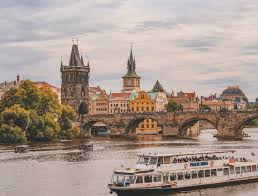
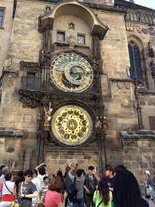

✈️ VIAJA POR EUROPA CON TU MEJOR GUÍA 🌍
*Un recorrido de ensueño por las ciudades más icónicas*

Desde las luces de París hasta los canales de Venecia, este viaje será una aventura inolvidable.
🗺️ ITINERARIO PARA TI, VIAJERO 🗺️
1. París, Francia
Es conocida como la Ciudad del Amor y la capital de la elegancia. Desde su majestuosa Torre Eiffel hasta las obras maestras del Museo del Louvre, cada rincón de la ciudad respira arte, historia y romance. Pasear por el río Sena al atardecer, disfrutar un café en Montmartre o contemplar la Catedral de Notre Dame hacen de París una experiencia inolvidable.
2. Ámsterdam, Países Bajos
Es una ciudad encantadora, famosa por sus canales serenos, flores coloridas y bicicletas que recorren cada calle. Explorar sus museos como el Rijksmuseum o la Casa de Ana Frank, recorrer los barrios antiguos, o relajarte en un paseo en barco por los canales, hace de esta ciudad una parada imperdible en Europa.
3. Berlín, Alemania
Es una ciudad moderna y vibrante que conserva cicatrices de su historia con orgullo. Visita el Muro de Berlín y la Puerta de Brandeburgo, descubre su escena artística underground, y déjate llevar por la energía de sus barrios multiculturales. Es un destino que combina cultura, historia, innovación y diversidad.
4. Praga, República Checa
Es una joya medieval que parece salida de un cuento de hadas. Sus calles empedradas, castillos góticos y la magia del Reloj Astronómico hacen que perderse en esta ciudad sea una delicia. El Puente de Carlos y el Castillo de Praga te transportan a otra época, donde cada rincón tiene una historia que contar.
 



5. Venecia, Italia
Es una ciudad flotante única en el mundo, con sus románticos canales, góndolas que se deslizan lentamente y arquitectura renacentista que parece suspendida en el tiempo. Explora la Plaza de San Marcos, cruza el Puente de los Suspiros y prueba un gelato mientras navegas entre sus mágicas aguas.
6. Barcelona, España
Es una explosión de colores, sabores y formas. Desde las obras maestras de Gaudí como la Sagrada Familia hasta sus animadas playas del Mediterráneo, la ciudad vibra con vida. Disfruta sus tapas, pasea por Las Ramblas, visita el Parque Güell y sumérgete en una mezcla única de cultura, arte y diversión.
📸 LOS MOMENTOS QUE MÁS RECORDARÁS 📸
✨ Noche iluminada en la Torre Eiffel
✨ Atardecer en los canales de Ámsterdam
✨ Pizza frente al Gran Canal de Venecia
"Viajar es vivir dos veces."
Created by Steve Cárdenas | Viaja por Europa 🌍
🍷 Gastronomía Europea
*Descubre los sabores únicos de cada ciudad que visitarás.*
🍽️🌍 Desde el delicado aroma de un croissant recién horneado en París,
hasta el intenso sabor de una paella frente al mar en Barcelona.
Europa no solo se recorre con los pies, también se saborea con el alma.
🍽️🌍
Francia
Quesos, vinos, croissants, macarons, boeuf bourguignon, ratatouille, crêpes

Italia
Pasta, pizza, gelato, tiramisú, risotto, lasagna, cannoli
España
Tapas, paella, jamón ibérico, gazpacho, churros, tortilla española
Alemania
Salchichas, pretzels, cerveza artesanal, schnitzel, strudel, sauerkraut
Países Bajos
Stroopwafels, arenque, quesos (Gouda, Edam), bitterballen, poffertjes
Created by Steve Cárdenas | Viaja por Europa 🌍
🎭 Cultura Europea
Europa es un mosaico cultural donde cada país cuenta una historia distinta a través de sus tradiciones, arte y arquitectura.
Francia
Cuna del impresionismo, la moda y la literatura universal. Museos como el Louvre y el Musée d'Orsay exhiben joyas del arte. Eventos icónicos como el Festival de Cannes y la Semana de la Moda en París. Además, cuenta con monumentos históricos como la Torre Eiffel, el Palacio de Versalles y la Catedral de Notre-Dame. La gastronomía francesa también es Patrimonio de la Humanidad, y sus cafés han sido punto de encuentro de intelectuales como Sartre o Simone de Beauvoir.
Italia
Tierra del Renacimiento con obras maestras de Da Vinci, Miguel Ángel, Rafael y Botticelli. Cuna de la ópera y la arquitectura clásica romana. Las ruinas del Coliseo, el Vaticano, y la Basílica de San Pedro son símbolos de su herencia. Ciudades como Florencia, Roma y Venecia son museos al aire libre. Su cine neorrealista ha influido a generaciones y directores como Fellini o Pasolini marcaron época.
Alemania
País de profundas raíces filosóficas (Kant, Hegel, Nietzsche), musicales (Beethoven, Bach, Wagner), y literarias (Goethe, Kafka, Hesse). Sus festivales como el Oktoberfest y sus castillos medievales como Neuschwanstein evocan una Alemania tradicional y encantadora. También es referente en innovación, diseño industrial y tecnología. Berlín destaca por su escena alternativa y su historia reciente como símbolo de la reunificación europea.
España
Patria del flamenco, las sevillanas y una diversidad cultural inmensa. Las fiestas populares como San Fermín, La Tomatina y Las Fallas reflejan su espíritu festivo. La obra de Gaudí en Barcelona, como la Sagrada Familia y el Parque Güell, son patrimonio artístico universal. La literatura del Siglo de Oro (Cervantes, Lope de Vega) y el cine de Almodóvar siguen cautivando al mundo. Su pluralidad regional (vasca, catalana, andaluza, gallega) enriquece su identidad cultural.
Países Bajos
Cuna de genios como Rembrandt, Vermeer y Van Gogh. Un país conocido por su apertura, tolerancia, diversidad cultural y derechos sociales avanzados. Ámsterdam es símbolo de libertad creativa, con museos de renombre y arquitectura sostenible. Sus tulipanes, molinos de viento y paisajes inundados muestran su armonía con la naturaleza. Además, es pionero en urbanismo moderno y movilidad ecológica gracias al uso de bicicletas.
Created by Steve Cárdenas | Viaja por Europa 🌍
💡 Consejos para tu Viaje
Algunos tips útiles para disfrutar tu aventura europea al máximo.
- 🔒 Cuida tus pertenencias en lugares turísticos.
- 💳 Lleva algo de efectivo y una tarjeta internacional.
- 📱 Usa apps como Google Maps, Rome2Rio o Duolingo.
- 🎒 Empaca ligero y con ropa cómoda.
- 📸 No olvides una buena cámara o móvil.
- 🗣 Aprende algunas frases básicas en el idioma local.
- 🚆 Aprovecha el transporte público o trenes regionales.
- 🕰 Llega con tiempo a aeropuertos y estaciones.
- 🌦 Consulta el clima antes de cada día de excursión.
- 🧴 Lleva adaptador de enchufe y cargador portátil.
- 📅 Planea tu itinerario, pero deja espacio para improvisar.
- 😷 Lleva mascarilla y gel antibacterial por precaución.
- 🌍 Respeta las costumbres y normas locales.
- 🧠 Infórmate sobre los horarios, propinas y normas de cada país.
- 🛂 Guarda copias digitales de tus documentos importantes.
- 🏨 Reserva alojamiento cerca de centros históricos.
- 🍽️ Prueba la comida local en lugares no turísticos.
- 🚶♂️ Camina tanto como puedas para descubrir rincones únicos.
- 📚 Investiga sobre la historia de los lugares que visitarás.
- 🎟️ Compra entradas con anticipación para atracciones populares.
Created by Steve Cárdenas | Viaja por Europa 🌍